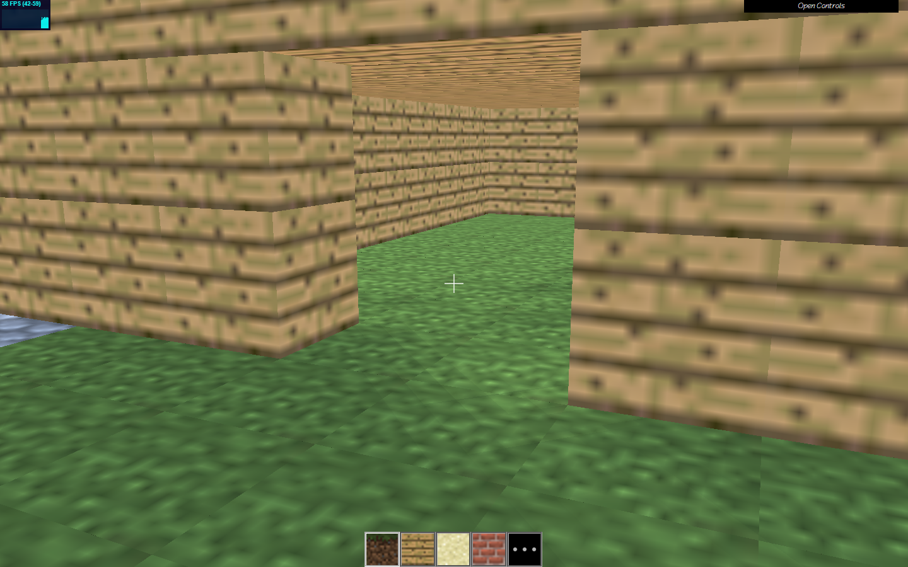
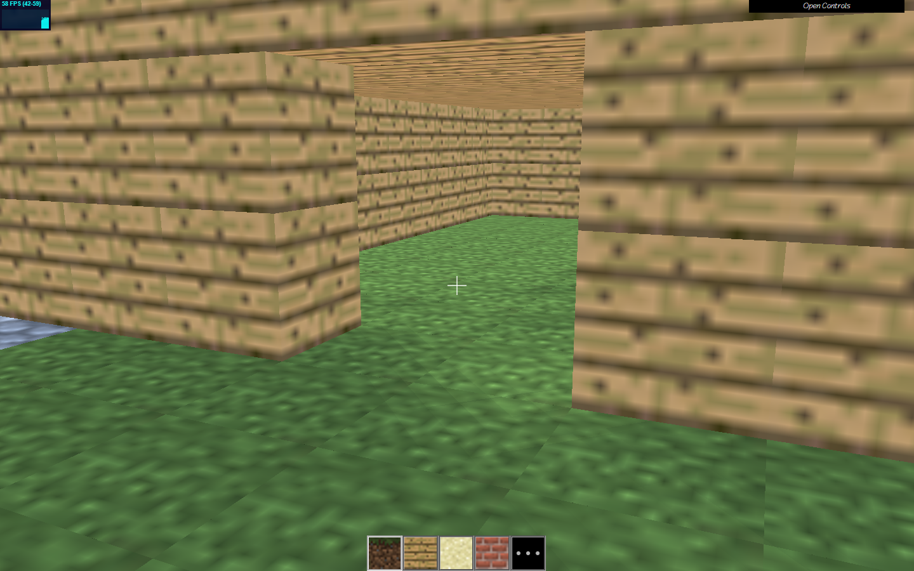
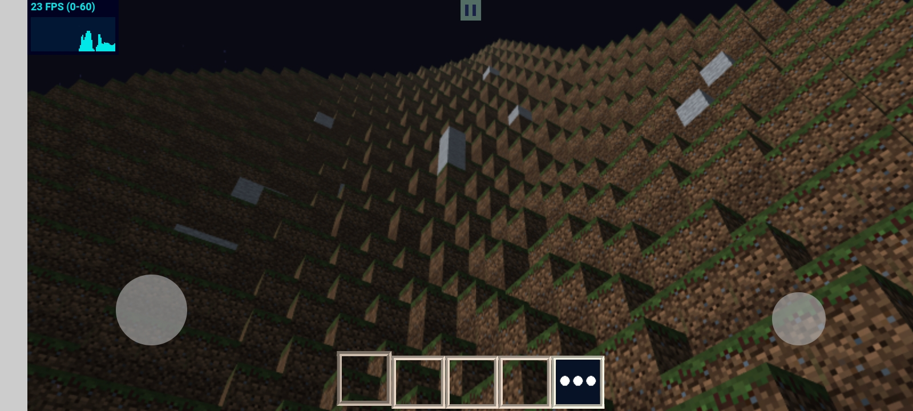
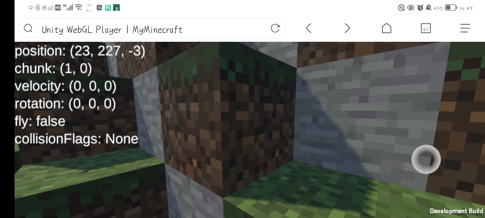
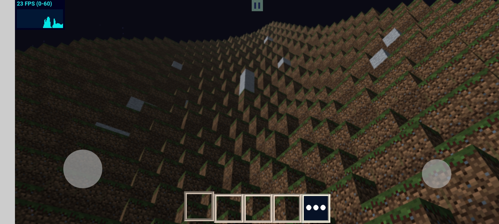
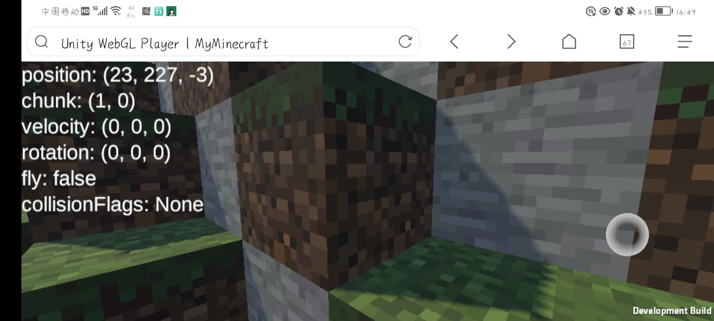

我的世界（网页版） | MinecraftWeb
关于 | 作者的话
大家好，我是这个网站的开发者。
很高兴遇见屏幕前的你，一个我的世界的热爱者。这段话很长，如果你有时间的话，我还是希望你能耐心看完。
弹指一挥间，匆匆已三年。三年时光里，这个网站变化很大，从最初的简陋，到后来一年的学习与努力，再到最终还是选择放弃。
也许，你不曾想到，三年前的我，只是一个因疫情在家上网课的初二学生，因为偶然，邂逅了Three.js引擎，便开始了我摸鱼仿制我的世界的旅途。
当然，这个想法，并非临时起意。而其实早在小学六年级，便已开始酝酿。
而一年之间，代码结构变得越来越烦乱，当你做的越多，你学的越多，你接触到的技术也越多时，你会发现你从前的代码是如何的烂，以及一些奇奇怪怪的bug。原本很好的特性，却不知为何而变成了bug。
最终，当一切的修修补补都失去意义时，我只剩下两个选择：重写，或放弃。我选择了后者。
而几个月前前，一阵突如其来的流量，让我有了重新着手这个项目的希望。不知道你是否能想象，仅仅是一些代表访问量的数字，也能让我感到无比兴奋激动。因为，这是我的项目，有人关心我的项目，而且很多。
与其他项目比起来，这个项目简直不堪入目，甚至可能使我无地自容。但也因此，我决心，用Unity重写一遍。
是的，这三年里，我成长了许多，从初中，迈入高中，也不再只拘泥与编程。毕竟，一款好的游戏是应该是艺术的集合。
三年里，我不仅探索了许多编程世界，还探索了建模、编曲、简单的图片编辑以及游戏制作，并独自创立了一个工作室。我发现，三百六十行，无论哪行，其身后都有这无数独特的技艺技巧。
很不幸地，Unity打出的网页版无法运行，我又失败了，无可奈何，我只能提供Windows/Android的新版，只能让大家见谅了。
我查询GitHub上这个仓库最早的一次提交，是在2019年5月1日。也就是说，到现在，要三周年了。于是，为了纪念这天，我重做了这个网站，并写下了这段话。
真的很感谢大家，也感谢能读到最后的你。
——wzh 2023年4月22日夜
这是一些版本的截图：
 

 



关于 | 项目 & 作者
欢迎大家也来我的工作室逛逛：作者の创新工作室


支持 | 赞助
现在我使用的是我白嫖的服务器，连简单的聊天室都不太稳定，但我还是希望以后能弄出联机版本。
如果可以的话，希望你能支持一下我。如果不能的话，也感谢你，毕竟，至少你来过，这也是对我最好的支持。